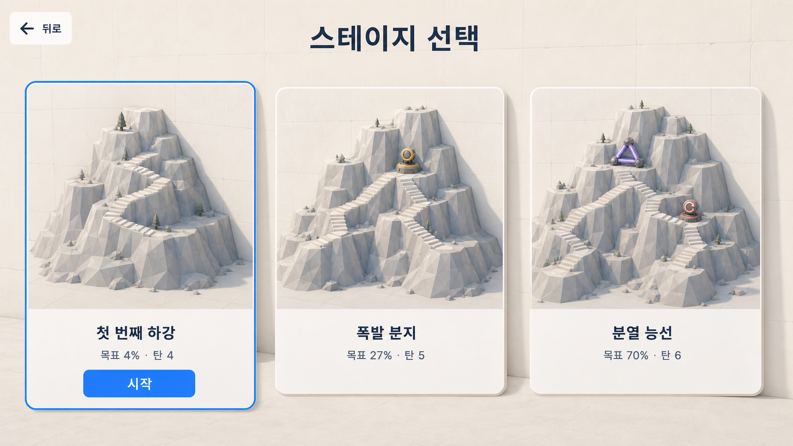
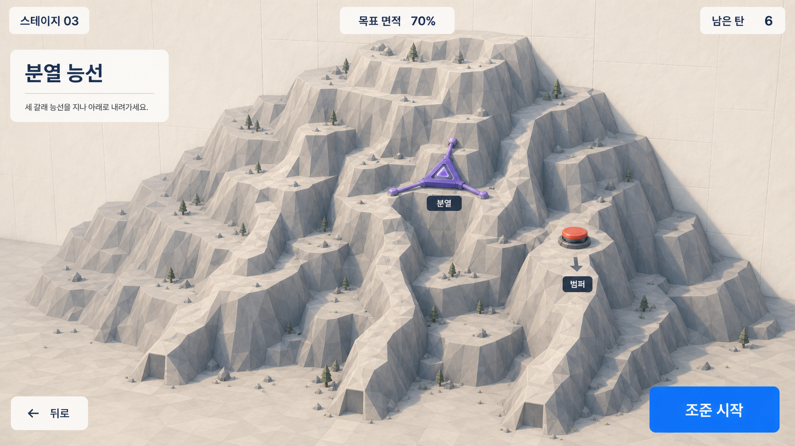
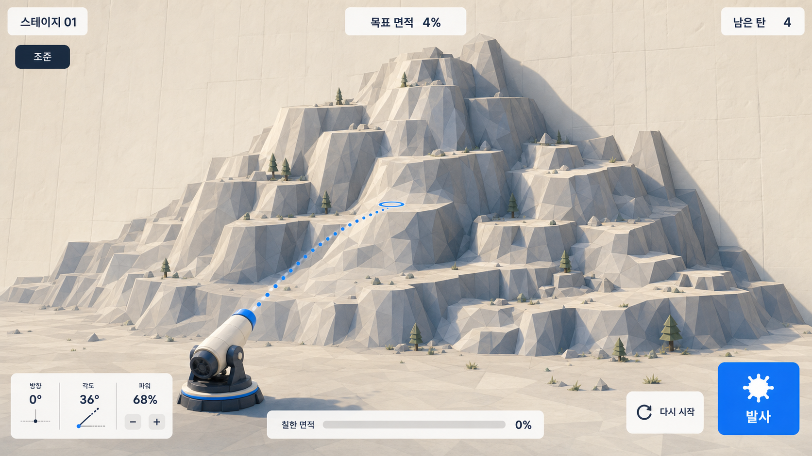
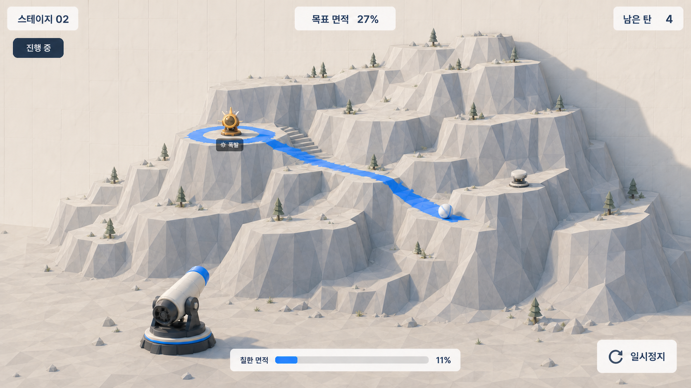
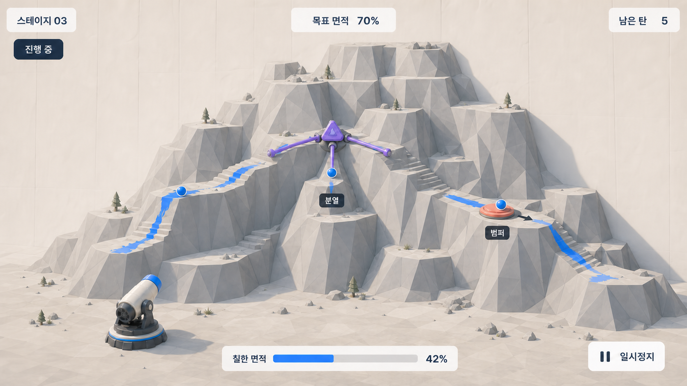
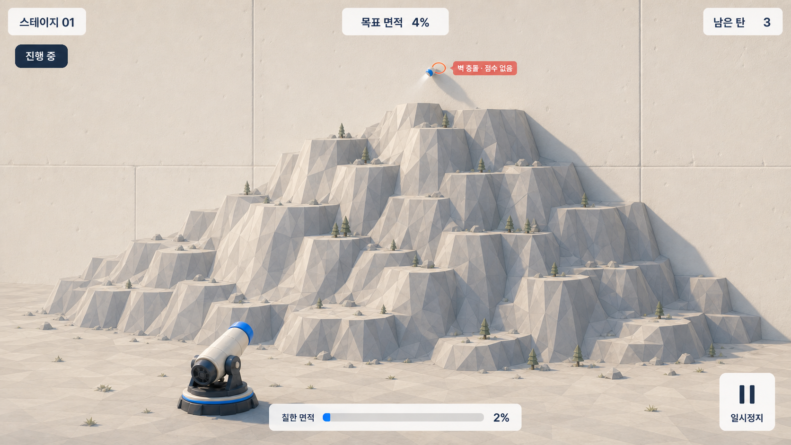
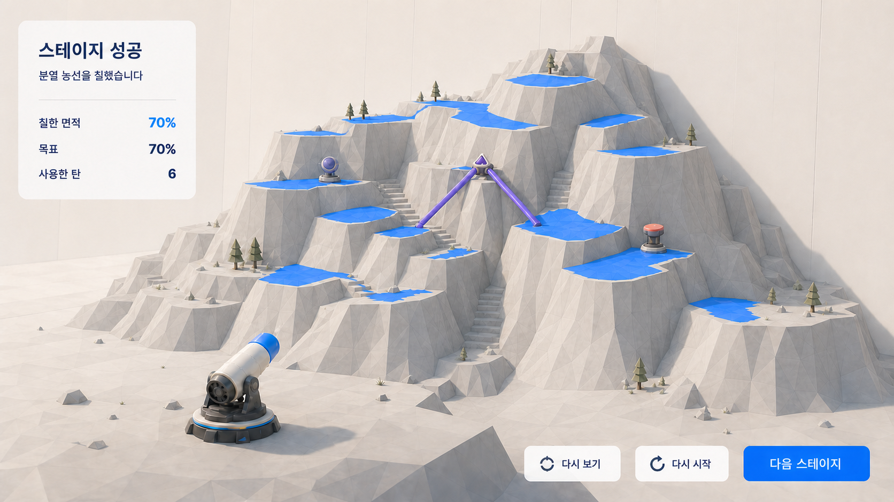

01
스테이지 진행 구조
단일 하강로에서 두 갈래, 세 갈래로 늘어나고 상승·하강 반전도 많아진다. 장치는 지형 위의 실제 3D 물체로 미리 읽힌다.
아래 7장은 현재 실행 화면이 어떻게 바뀌어야 하는지를 시각적으로 번역한 목표 시안이다. 실제 구현의 권위와 수용 기준은 활성 ExecPlan에 있으며, 이 보드는 지형·물리·UI가 최종적으로 어떻게 함께 읽혀야 하는지 빠르게 검토하기 위한 자료다.
4/27/70% 목표, 4/5/6발, 밝은 실물 벽과 3D 산, 첫 충돌 궤적, 접촉 중 연속 도색, 세 장치의 색·역할, 한국어 기본 HUD.
정확한 랜덤 시드와 산 모양, 조준 숫자, 2/11/42% 같은 중간 진행률, 최종 페인트 무늬와 장식 배치.

단일 하강로에서 두 갈래, 세 갈래로 늘어나고 상승·하강 반전도 많아진다. 장치는 지형 위의 실제 3D 물체로 미리 읽힌다.

벽에서 튀어나온 두꺼운 산, 서로 다른 높낮이의 세 경로, 실제 충돌 크기로 배치된 Splitter와 Bumper를 발사 전에 확인한다.

시작·재시작 때 실제 도달 가능한 지형 중앙 부근을 향한다. 점선은 실제 첫 충돌점에서 끝나며, 그 이후 구름·도색 결과는 예측하지 않는다.

공은 완만한 타깃 상면에 실제로 닿아 굴러가며 공 뒤에만 끊김 없는 흔적을 남긴다. 공중, 수직 외피, 벽에는 페인트가 생기지 않는다.

Splitter는 정확히 세 공을 만들고, Bumper는 실제 접촉한 공 하나만 표시 화살표 방향으로 낮게 돌려보낸다. 각 공은 접촉 구간만 칠한다.

높게 쏜 탄은 배경을 통과하거나 산 너머로 사라지지 않는다. 벽에서 한 번 충돌하고 즉시 정지하며 도색·점수·뱅크샷을 만들지 않는다.

결과 화면에서도 산이 가려지지 않는다. 파란색은 타깃 상면의 누적 이동 흔적만 나타내며, 외피·앞마당·벽과 장치 색은 끝까지 분리된다.
공통 프롬프트는 원본 레퍼런스의 구도와 HUD 위계만 사용하고, #F7F3EC 벽,
#E6E4DE 타깃 상면, #C6C9C7 외피, #1678F2 페인트,
#10233D UI를 고정했다. 각 화면에는 활성 ExecPlan의 해당 상태—단계 증가, 브리핑,
기본 조준, 연속 접촉 도색, 장치 연쇄, 벽 충돌, 클리어—만 별도 프롬프트로 추가했다.